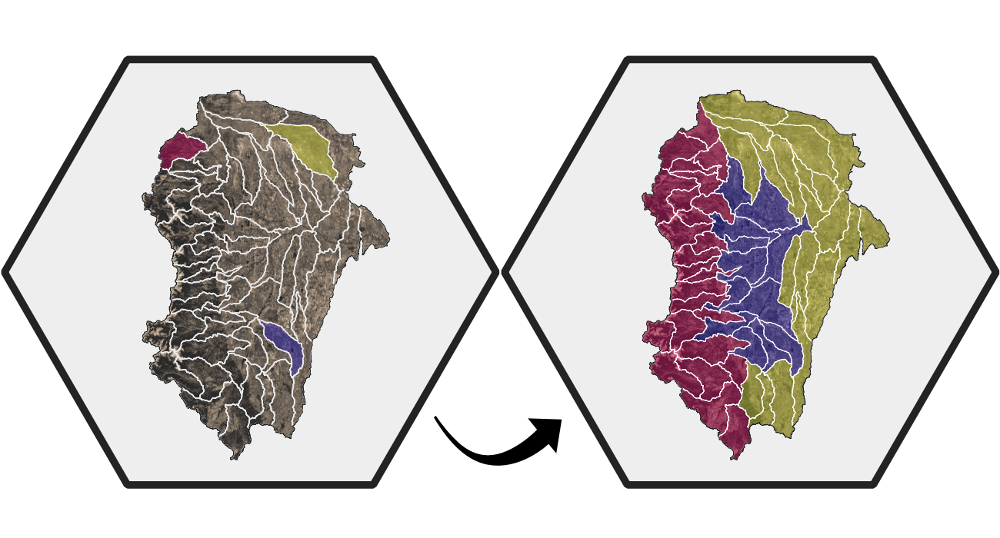
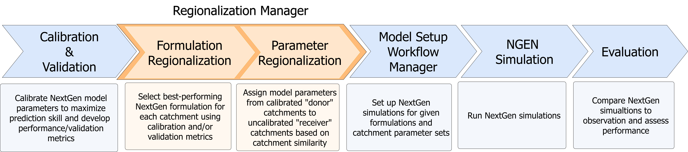
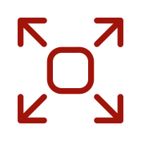

NWM Regionalization#
Formulation and Parameter Regionalization for NextGen#

The National Water Model (NWM) NextGen framework is a modular hydrologic modeling system that links compatible models into flexible formulations for different spatial domains. This flexibility makes it challenging to determine which formulations and parameters perform best across regions, particularly in ungauged basins. nwm_region_mgr is a Python package that automates this process by using calibration/validation data and various catchment attributes to identify optimal model formulations and parameter sets at the regional scale.
Role in the NWM Ecosystem#

A critical tool for forecast skill#
Hydrologic models benefit strongly from calibration. Tools in this repository make the most out of limited observational data to intelligently transfer optimal parameter sets beyond calibrated catchments. This tool depends on data from a calibration and validation run of NextGen, as well as various catchment attributes characterizing local climate, topography, landcover, soil, geology, and anthropogenic influence. Once the tool has been run, the optimal formulation and parameter sets may be used by the Model Setup Workflow Manager to set up NextGen simulation runs and performance may be assessed with NWM Evaluation Manager.
Key Features#
Formulation Regionalization
Identifies best-performing NextGen formulation across all catchments (calibrate and uncalibrated)
using calibration/validation statistics.
Parameterization Regionalization
Estimates parameter values for uncalibrated catchments by leveraging calibrations from similar calibrated catchments.
Clustering
Multiple methods available to group calibrated catchments into clusters based on shared catchment characteristics.
Distance_based
Multiple methods available to identify similar catchments based on attribute distance calculated from catchment characteristics.
Diagnostic Plots
Generates plots and maps that explain why specific formulations and parameters were chosen.
Customizable
Gives users full control over every step through easily editable configuration files.

Scalable
Efficiently allocates computational resources to handle workflows from small watersheds up to CONUS-wide analyses.